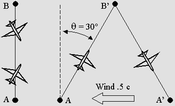
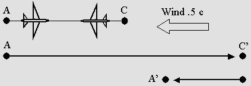
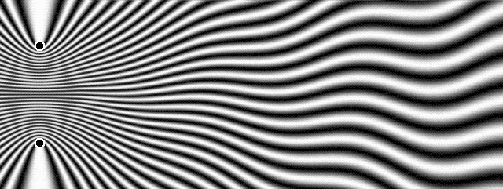
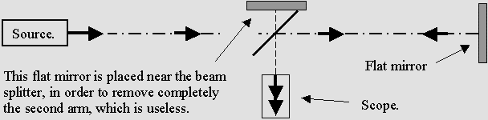
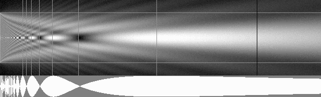
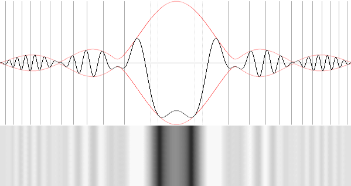
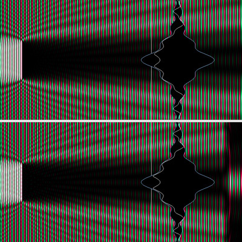

|
|
| 00 | 01 | 02 | 03 | 04 | 05 | 06 | 07 | 08 | 09 | 10 | 11| 12 | 13 | 14 | 15 | 16 | 17 | 18 | 19 | 20 | 21 | 22 | 23 | 24 | 25 | 26 | 27 | 28 | 29 | 30 | 31 | 32 | 33 | 34 |
ERRORS TO CORRECT
|
|
The Time Scanner produces a special Doppler effect whose characteristic is the absence of transverse wavelength contraction.
Such a result is possible only if the emitter frequency slows down according to Lorentz's contraction factor.
The Lorentz transformations prove to be the exact formulation for this special Doppler effect.
The moving electron and all matter waves are undergoing the same Doppler effect: this fully explains Lorentz's Relativity.
It is just a phase and wavelength transformation because of the Doppler effect.
The error here was to think that space and time was involved.
|
Let's face it: we are unable to explain clearly most phenomena such as light, gravity, atomic forces or magnetic fields. We simply ignore what is really going on. A hypothesis is not a certainty; it must be proved. The reason for this is that wrong ideas about matter are worse than no ideas at all. They become an obstacle for further analysis. We admitted too quickly a lot of hypotheses which were never clearly demonstrated. This page lists many of them. |
GALILEO'S RELATIVITY PRINCIPLE IS WRONG
|
Descartes invented the famous "Cartesian" frame of reference using three axes placed crosswise and the O origin where x, y, z coordinates are zero. He also discovered that light is made of waves traveling through a medium which he called the aether. The consequence of this is that the speed of light must be evaluated with respect to the aether, which is postulated to be at rest. So, in any moving system such as the transverse AB axis below, the light propagating through the aether cannot behave like Galileo predicted any more. It rather behaves like planes flying through air. Obviously, in the presence of a strong wind, the complex AB'A' motion involves a longer distance through air then the plain ABA round trip. Michelson also discovered that the axial AC'A' motion involves a longer distance than the transverse AB'A' one, and he realized that the difference should be measurable by means of an interferometer. |

Planes simulating waves traveling in a moving frame of reference.
The transverse AB'A' absolute distance is given by the gamma factor: ABA / (1 – b 2 ) (1 / 2)

The axial AC'A' absolute distance is rather given by the gamma factor squared: ACA / (1 – b 2 )
|
Clearly, a Galilean frame of reference cannot exist. Light is a force which involves energy, from radio waves to gamma rays. The speed of light is c with respect to the aether. Matter acts and reacts using more aether waves. So, from an absolute point of view, any event must be evaluated with respect to the Cartesian frame of reference, which is at rest. Einstein postulated in 1905 that the speed of light is the same in all Galilean inertial frames of reference. Any intelligent person should realize that this is totally absurd. However, because Relativity is true and amazing, this is exactly what any moving observer should record. So there must exist a reason for this, and Lorenz explained it in a much better way than Einstein did. |
HENRI POINCARÉ'S SYMMETRIC EQUATIONS ARE WRONG
The Lorentz transformations (1904) below are a bit complex at a first glance, but they are simply the mathematical formulation of a special Doppler effect involving a slower frequency. Actually, they are much similar to Woldemar Voigt's equations (1887) about the Doppler effect. Let's just examine the first equation above. Poincaré noted that coordinates could be evaluated in light seconds and speed in light seconds per second: beta = v / c. Also, c = 1 can be removed from all equations. Finally, the Lorentz g contraction factor can replace the whole square root above, and one obtains a simpler equation: x' = x – beta * t / g However, Poincaré showed that this equation could be reversed like this: x' = (x – beta * t) / g x = (x' + beta * t') / g An amazing symmetry and reciprocity appears. Swapping x, x' and t, t' variables does not make any difference. This is indeed what any moving observer will record, but it is not what is really going on. Poincaré discovered his famous Relativity Postulate in 1904, hence before Einstein, but he did not fully realize that those equations only describe appearances. One should recognize that while: x' = x – beta * t / g the correct value for x is rather: x = g * x' + beta * t Such an error is deplorable. It should be emphasized that Einstein made the same mistake and that it is a well known fact that he was well aware of Poincaré's ideas, which were somewhat different from Lorentz's. This is how one can be convinced of plagiarism: similar ideas may be just a coincidence, but the same ideas including the same mistakes surely indicate a copy. Lorentz performed much better. His 1904 version of Relativity is perfectly true. See "Electromagnetic phenomena in a system moving with any velocity smaller than that of the light.", Proceedings, Amsterdam Academy, May 27, 1904. Unfortunately, he changed his mind afterwards because of Einstein's celebrity and also because he could not explain why matter should contract. As a matter of fact, matter really contracts. Facts are absolute. For any moving entity, there can be only one time, one speed, and one position in the same Cartesian frame, which is at rest with respect to the aether. One cannot switch freely from x to x' and from t to t' according to a different "Galilean" moving frame of reference because Galileo's Principle is wrong. The point is: those equations involve the speed of light, and the light is not an equation. The light travels in a mechanical and absolute way. |
THE LIGHT WAVES DO NOT VIBRATE TRANSVERSALLY
|
Augustin Fresnel studied polarized light. He thought that transverse vibrations could explain this and he postulated that aether should be made of "material points separated by intervals" in order to transmit them. However, he was wrong. Composite waves emitted simultaneously by many electrons can clearly transmit transverse patterns. Such waves are regular longitudinal waves, but the interference pattern may undulate and even rotate.  The light waves can carry transverse patterns. This explains polarization.
For example, two sources produce the above pattern if one of them is slightly moving to and fro. This explains the light polarization, which may either rotate or remain stable on a given transverse axis. |
ELECTROMAGNETIC WAVES DO NOT EXIST
|
Maxwell's equations only describe how energy carried out by light or radio waves will behave. They indeed yield correct results, but they are still just equations. Let's face it: James Clerk Maxwell never demonstrated that magnetic and electric fields could really travel through empty space. One simply cannot check whether magnetic fields really can move through empty space or not because a material device such as an antenna must be used in order to detect them. This device may transform radio waves into electric and magnetic fields as well. It is a well known fact that Maxwell firstly imagined a mechanism made of interconnected aether vortices. However, he finally removed carefully any reference to a mechanism. Maxwell just elaborated a set of equations. He did not discover what was really going on. Clearly, his assumption that his equations describe moving electric and magnetic fields is highly disputable. There is a more acceptable possibility: radio waves are not electromagnetic, they are rather made of aether waves capable of producing electric and magnetic fields when they attain matter. Maxwell was a great scientist. He was well aware that all this was uncertain. He wrote: "The energy in electromagnetic phenomena is mechanical energy". So it is still unexplained. However, physicists in radio electricity (especially Lorentz and Poincaré) became very familiar with his equations and finally, they all forgot that it was just an hypothesis. |
EINSTEIN'S POSTULATE IS WRONG
|
This was Einstein's 1905 Special Relativity most important postulate: "The speed of light is the same in all Galilean inertial reference frames." Surprisingly, this seems to be true. Many observers moving at different speeds will really record the same speed for light. However, this severely hurts common sense. One should investigate how come it is possible. In 1904, Lorentz published his famous transformations and he showed that they could explain such a stunning result. He especially discovered that moving matter, including the observer and his instruments, should contract. He also found that clocks should tick slower. Finally, the light does not really travel at the same speed in all reference frames: those transformations simply cancel the speed difference and the observer is mislead. |
THERE IS AN AETHER
|
Hendrick Lorentz and Henri Poincaré discovered in 1904 that observers cannot detect their motion through aether. For example, the Michelson interferometer yields a null result because it contracts. Or Bradley's aberration is perfectly symmetric, etc. But this does not mean that the aether does not exist. On the contrary, Lorentz was firmly convinced that it should exist. So he established his equations (which he borrowed from Woldemar Voigt's Doppler equations) in accordance with the speed of light, which in his picture was absolute. He finally found that Voigt's constant k should be eliminated from his own transformations, because a stunning invariance occurs when k = 1. Lorentz's equations were established in accordance with the postulate that the aether does exist. The point is: all happens as if aether exists. So, today's common assumption that Michelson's experience ruled out the aether and that this hypothesis has been "abandoned" is definitely wrong. Nobody ever demonstrated that the aether does not exist. It remains an acceptable hypothesis. This is especially important because most phenomena and matter properties are still unexplained. For example, standing waves could explain magnetic fields, but they would need an aether. Matter particles also clearly exhibit wave properties. This strongly suggests that matter waves and the required medium should exist. |
THE KENNEDY-THORNDYKE EXPERIMENT WAS WRONG
|
You may read in Wikipedia: "The Kennedy-Thorndyke experiment, by using arms of dissimilar lengths, tested for the hiding of the aether effects due to length contraction and found none." This is totally false. Many scientists deduced from this that the aether does not exist. Actually, there was a serious omission: the light frequency slows down. According to Lorenz, the apparatus (not space) should contract; additionally, the source frequency (not time) should also slow down. In such a case, the number of wavelengths along a transverse axis never changes whatever the speed. It also remains the same along the displacement axis after a 90° rotation because of the contraction. The consequence of this is that the second arm (shorter or not) is not useful any more. It can be removed like this: |

A simpler interferometer.
|
Let's make it clear: the Kennedy-Thorndyke experiment was a mess. The Michelson interferometer needs only one arm, not two. On condition that the Lorentz transformations are true, the second arm length makes no difference. |
PHOTONS DO NOT EXIST
|
Descartes discovered that the light is made up of waves traveling thanks to a medium which he called the aether. Then Fresnel studied polarization and realized that this behavior could not be explained by regular longitudinal waves. So he supposed that the light waves should vibrate transversally. This was the first mistake. Polarization can be explained by composite longitudinal waves, because the interference pattern can undulate transversally. This supposes that the light is emitted by at least two sources, one of them being stable (for example a proton) and the other one (for example an electron) very slightly vibrating along a straight or circular path. Moreover, the electron frequency is constant, but the light frequency is that of the vibrations. The light is emitted on a secondary frequency. Then Einstein studied the photoelectric effect and he supposed that the light should be made of particles because, according to Planck's constant, it always contains the same amount of energy for a given frequency. This was the second mistake. Why should this constant amount of energy be imperatively attributed to light instead of electrons? After all, electrons are present for both the light emission and reception. So the quantum properties of light may be allotted to electrons as well. Finally, the emitted light really contains the equivalent of a photon of energy, but it is still just made of waves. And finally, Compton never explained how "his" photons were working. He failed to explain the true nature of electric and magnetic fields. He failed to explain the electron mechanism. All students in the world should read how he interpreted his results despite his total ignorance. They would realize that there is still a long way towards the truth. Nobody can transform so many uncertainties into certitude. |
ELECTRONS DO NOT ROTATE AROUND THE ATOMIC NUCLEUS
|
From 1907 to 1911, Ernest Rutherford experimented with fast positive helium nuclei hitting thin material such as gold foil. He discovered that some of them were deviated and even bounced back like a ball hitting an obstacle. Rutherford did not approve Thompson's "plum pudding" atomic model and he suggested that electrons should rotate like planets around the atom nucleus. Otherwise, in his picture, protons would simply attract electrons and produce a catastrophic collision. One should be aware that this experience did not indicate that electrons really rotate around the atom. It simply indicates that a repulsion effect occurs between positive particles and that matter is amazingly permeable. Surprisingly, one hundred years later, nobody could really detect such a rotation, which is nevertheless universally accepted. This theory is wrong, though, and it is now a severe obstacle for further discoveries about electronics, magnetic fields, light emission, chemical reactions, etc. In 1911, nobody knew that electrostatic fields work differently at atomic scale. Many electrons closely put together behave as a whole, and this significantly reduces the nucleus attraction effect. Moreover, because it is a composite wave emitter, the nucleus must radiate waves according to Fresnel's diffraction. The interference pattern exhibits periodic null amplitude zones where electrons can be captured. The gray vertical lines below indicate distances according to Fresnel's number (1 on the right up to 7 on the left hand side), and electrons captured in each corresponding atomic layer should obviously emit light waves according to the Balmer series, and also Lyman, Paschen, etc.. |

The link between Fresnel's number and the Balmer series is obvious.
G. N. LEWIS WAS RIGHT : THE ATOMIC EXTERNAL STRUCTURE IS CUBIC
|
Gilbert Newton Lewis (1875-1946), a famous American chemist, believed that electrons were regularly distributed around the atomic nucleus. This was J. J. Thompson's "plum pudding" model. In 1912, he was aware that only the external electronic layer, containing a maximum of 8 electrons, was responsible for chemical binding. Lewis also noted that 8 electrons regularly spaced on a sphere should be placed on the 8 vertices of a cube. He investigated this hypothesis and found that it was consistent with most chemical structures. Each element can be seen as a cube with a given number of electrons on its vertices, up to 8. Then one may join two or more elements together in such a way that empty vertices in one element are filled with one or two electrons from another element. The Lewis method is still well known today, simply because it works. This is experimental evidence that the cubic structure is more then just a theory. However, Ernest Rutherford and Niels Bohr preferred the planet-like hypothesis, which replaced Thompson's model and is still accepted today in spite of the lack of proofs. Such an error is especially deplorable because Lewis' model was based on experiments, while Rutherford's was just hypothetical. Lewis also suggested that the quantum of light should be named "photon". Nobody is perfect. |
MATTER AND ANTIMATTER DO NOT ANNIHILATE
|
It is a well known fact since Murray Gell-Mann, who discovered quarks, that all complex particles including protons and neutrons are made of quarks. It is also well known that electron/positron collisions produce quarks. By stubbornly clinging to this idea that electrons and positrons put together annihilate, one can no longer admit that they could rather be glued together because of gluonic fields and produce quarks and other particles, hence matter. Gluonic fields contain a lot of energy, making it impossible to detect those glued electrons and positrons any more. There is no evidence of complete destruction when matter encounters antimatter. There is an enormous energy dispersion, though, which is likely to hide or severely mask the escaping electrons and positrons from the detectors. One should bear in mind that a proton, whose mass is 1829 times that of an electron, may contain only six electrons and one positron. All the rest is energy from gluonic fields which completely transform the nucleus picture. The assumption that E = mc2 indicates that matter can be totally transformed into energy is false. On the one hand, energy stored inside electrostatic or gluonic fields of force can be transformed into kinetic energy, which is the result of Lorentz's mass increase due to motion. Actually, moving particles undergo a severe forward Doppler effect, hence more energy as a result of a higher frequency. On the other hand, electrons and positrons are indestructible. |
NON-EUCLIDEAN GEOMETRY IS WRONG
|
Let's make it perfectly clear: Euclidean geometry is the only acceptable one. Euclid's geometry is based on evidences that any intelligent person should understand. There is no need for further analysis, revocation or derogation. It works. It is that simple. So any attempt to bypass it should be seen as highly suspect. |
THE STANDING WAVE TRUE MECHANISM SHOULD BE REVIEWED
|
The common assumption is that standing waves are the superposition of two opposite wave trains. This interpretation sometimes works but it is true only from a mathematical point of view. The animated image below was made using this principle, and it is correct.
Regular standing waves.
However, this is not what is really going on. Standing waves exhibit regularly spaced nodes where amplitude is always zero. From a mechanical point of view, no energy can cross this point where there is absolutely no evidence of traveling waves. The correct interpretation is that the medium substance is moving to and fro and that waves are bouncing from one node to the nearest one. Standing waves are not traveling waves. It is a totally different phenomenon. The error arises from the fact that true experiments in physics are most of the time replaced by mathematics. One should be aware that all physical phenomena have a cause. They should be explained by mechanics, not mathematics. This is important because more complex phenomena definitely escape the opposite wave trains theory. For example, the first node diameter around the central core is .75 lambda for circular standing waves while it is rather a full wavelength wide in the case of spherical standing waves. What is more, the program below clearly shows that this variation actually depends on amplitude. Thus, if circular waves incoming from one side are stronger, the node is no longer circular. It becomes elliptic and it may also move. This is a first indication that two spherical standing wave sets can definitely influence each other. It is the very first step towards a mechanical explanation of Newton's action and reaction law. WaveMechanics05.bas WaveMechanics05.exe This apparently immaterial advocacy in favor of a better analysis of standing waves will become of the utmost importance as soon as the wave nature of matter will be recognized. |
GRAVITY IS NOT LINKED TO RELATIVITY
|
Gravity is not the "fundamental force" of the universe. It is just a force like others, all of them being caused by aether waves through fields of force. There is no need to invoke Relativity in order to explain gravity, which means that there is no General Relativity. Moreover, although it leads to the same conclusions as Einstein's, Lorentz's Relativity is better because it can be explained from a mechanical point of view. It fully explains all phenomena related to matter, motion and forces including gravity, which also works in the absence of motion anyway. And finally, gravity certainly transforms matter mechanically in such a way that it may behave differently, for example causing clocks to run slower. |
THE PERIHELION PRECESSION OF MERCURY IS CAUSED BY MECHANICAL FORCES
Relativity does not involve gravity, so it does not explain Mercury's anomaly. It should be emphasized that this problem has been much too much publicized in the past. So small a difference (only 43" of an arc for a whole century) is caused by a lot of minor influences and it is quite insignificant with respect to a theory which is supposed to be so great. According to Newton's laws, a theoretical elliptic orbit should be stable. Mercury's orbit being slightly unstable, one must find a mechanical reason for this. For example, Le Verrier did not really consider the fact that the sun is very large, making atoms from its surface attract Mercury differently. Mercury's orbit is indeed very small, from 46 to 70 million kilometers. There is frequently more than a 1° angle to the sun surface and the force according to the cosine is less than .9998 in this case, not 1. The important point is that this angular difference is not constant because the distance is not. To say it simply, the attraction force is not exactly proportional to the distance, making Newton's equation inaccurate. More examples. The sun itself is not static with respect to the whole solar system. It certainly orbits around a center of gravity which is that of all the solar system. Jupiter and Saturn for example are huge planets containing a large amount of matter, and Le Verrier did not take their influence on the sun into account. He was not that meticulous. In addition, Jupiter remains in conjunction with Saturn for several of Mercury's orbits. Then a resonance effect could occur. The solar wind is rather strong near Mercury and its effect may not be negligible for a whole century. It is slightly oblique because of the sun rotation. The 11 years cycle could also cause a resonance. One could also examine the radiation pressure from the sun, which is 9 times stronger than on earth, and study how all that light and heat should be radiated from Mercury. Astronomers are now aware that Mercury is very slowly rotating in a peculiar way. Newton's action and reaction law should apply. The true effect of motion on gravity is still not well known. The sun rotation could produce a torque effect. Gravity may not be fully additive, that is, gravity from Jupiter and Saturn could decrease when they are behind the sun. There are strong magnetic fields around the sun, which are also present in the solar wind around Mercury. This planet contains plenty of iron and may react just like a big magnet. Another cause could be the tide effect, which is severe on Mercury; actually, the forces involved could even destroy it if its orbit was a bit smaller. One should realize that a century is a very long period of time as compared to a 43" of an arc shift. The point is that Mercury is a very small planet which is likely to react to dozens of small abnormal causes. Obviously, Le Verrier's calculus was inaccurate. Slowly but surely, searchers will study all of them and finally find which one has the most significant influence. Because Einstein did not examine any of them, his non-Euclidean tensor calculus is very likely to become obsolete. |
GRAVITY DOES NOT BEND SPACE
|
Very close to the sun, gravity does not decrease according to the well known square or the distance law. As a matter of fact, there is no gravity at all in the center, where it should rather be infinite according to Newton's equation. This indicates that Einstein's calculus, that is an artificial space bending, is preferable and may replace Newton's formula for small distances. However, it is only a method, not an explanation. Any intelligent person should realize that gravity cannot bend space. It is definitely a weird idea. |
GRAVITY DOES NOT ATTRACT LIGHT
|
The Sun's gravity cannot deviate light because it is made of waves. However, space around the sun is filled up with particles which can produce a lens effect. The result is the same, but the cause is not. It is a well known fact that the light is severely deviated in the earth's atmosphere, even at very high altitudes. This occurs because there are still some air molecules and other particles there. It should be the same around the sun because of the solar wind. The same phenomenon should also occur around galaxies, which are surrounded with gas clouds, but the lens effect there is certainly not perfectly regular because the gas distribution is not. The Fizeau experiment showed that moving transparent substances such as water could modify the speed of light or produce a deviation. The point is that the solar wind particles are faster when their density is higher. This may partially cancel the deviation difference, but not exactly. So the deviation is certainly not constant, and the difference will become perceptible using more precise instruments. This will indicate that Einstein's theory about the so-called space curvature is wrong. In addition, the blue light deviates more drastically than red inside normal optical glass, but the difference becomes smaller for very light glass such as quartz or fluorite. It is even smaller for gas, and especially rarefied gas. So the deviation for red and blue should be almost identical, but not exactly. The difference should become visible using sophisticated devices, and this would also indicate here that Einstein's ideas are wrong. As a matter of fact, space could not bend differently for red and blue light... Any experimented astronomer should admit that Eddington's results were highly disputable. In 1919, they should have pointed out that his small Newton telescope, suffering from unacceptable coma, could certainly not record so small a deviation. However, more recent results indeed indicate a deviation, but they are strangely reported in a mystic manner. Such people bowing very low in front of their Einstein prophet should be considered with suspicion. We need more objective data, and they are unlikely to be constant. They will certainly not match exactly Einstein's predictions, which were probably influenced by previous astronomic observations. And finally, gravity cannot change the light wavelength either. Matter undergoes severe constraints on the surface of a very large star. This certainly changes the way light is emitted, and especially its wavelength. The whole process may even be fully compromised under more severe conditions such as in a black hole. |
NEWTON'S LAWS CAN BE UPGRADED
|
Most people think that Newton's laws are still valid to a first approximation but that they otherwise must be totally replaced by Einstein's Relativity. This is definitely wrong. Newton's laws can be upgraded in accordance with the Lorentz transformations, making them perfectly correct and much simpler. Henri Poincaré discovered that the laws of physical phenomena are the same for an observer at rest and for an observer moving at a constant speed, making it impossible to determine whether he is moving or not. He was well aware that this should be the starting point for some new mechanics. From any observer's point of view, moving matter and all related phenomena undergo (or seem to undergo) the Lorentz transformations. A contraction occurs, the mass increases, the time there seems to slow down and the clocks do not indicate the same time on the displacement axis. The goal is to take those phenomena into account in order to reformulate Newton's laws. For example, the mass gain is given by the gamma factor: gamma = 1 / sqr(1 – v^2 / c^2). Then kinetic energy, which is related to this gain, can easily be deduced from it. Finally, kinetic energy is not linked to Relativity any more; it is just a consequence of the Lorentz transformations. The formula below for kinetic energy is already well known and replaces Newton's inaccurate E = m v^2 / 2: E = gamma * m – m A simpler example is the action and reaction law. It will be still fully accurate if one postulates that the field of force, which is located between two material bodies and responsible for this, is considered at rest. Then there are no action and reaction any more, just two opposite and equal actions. Suppose that a billiard ball hits another one. The calculus becomes simpler if both balls are considered to be in motion. If their mass is the same, they will simply bounce back at the same speed according to the formula above. The final step is to recover the observer's frame of reference. This means that Newton's action and reaction law must be upgraded to a double opposite and equal action law, which is true only if the field of force, not the observer, is considered to be at rest. Finally, the new mechanics initiated by Henri Poincaré is just an addenda to Newton's discoveries, while Einstein's Relativity proves to be complicated and unexplainable. It is also centered mainly and wrongly on gravity, while Newton's laws are simpler and involve the whole matter mechanics. |
THE ACTUAL BIG BANG THEORY IS DISPUTABLE
|
A Big Bang hypothesis is highly plausible because of the expanding universe, but actual descriptions of it appear quite imaginative, if not ridiculous. The goal here is not to explain how the universe was created. This is beyond our knowledge, but we should ultimately be able to make an acceptable portrait of the situation in its very first moments. However, we definitely cannot succeed while most physical phenomena are still totally unexplained. The first question we should answer is: what is matter? So the past remains even more obscure as long as this question remains unanswered. Obviously, the existence of an expanding aether would explain the expansion of very distant galaxies, whose speed is almost that of light. They may still be at rest with respect to the surrounding aether. Otherwise, because of the Lorentz transformations, they should be severely contracted in such a way that most of the universe matter would be concentrated near a sort of spherical "time wall". No matter could exist beyond this wall because it cannot reach the speed of light. In such a case, the Hubble constant could not really be constant, and so the theory of an expanding aether appears more acceptable. What is matter? Well, matter is solely made out of electrons, which are spherical standing waves. Electrons and positrons can join together and transform into quarks, then into protons and neutrons. So, in the beginning of times, one can postulate that there was nothing but a very concentrated aether filled with waves. From a mechanical point of view, this appears quite possible. This is a very alluring hypothesis because it is simple. |
THE LIGHT IS NOT STOPPED BY MATTER.
|
Most comments about this on the web are followed with the unavoidable "lol", which as far as I know means "Laugh out loudly". However, it is a well known fact that most radio waves, and also X-rays and gamma are not stopped by matter. Because the light is actually an exception, it would be simpler to postulate that all waves go freely through matter. Then, in order to explain why the light seems to be stopped, deviated or reflected, one can prove that electrons react to light and emit some new light whose phase is opposite. Firstly, because of the opposite phase, this new light will interfere with the other one and produce a shade behind opaque objects. Secondly, this new light will also produce a reflection in accordance with Huygens Principle. An thirdly, because transparent material such as glass produces reflections through more than a full wavelength, their sum is null and the wave energy is transmitted from one electron to another. Then some new light is emitted on the other side. This phenomenon is possible only inside very homogenous substances. The shade behind any opaque object can be calculated using Huygen's Principle:  This is the shade of a 1mm wire at 4 meters (about 13 feet). This is possible if matter emits some new light whose phase is opposite.
Today, we can also use Mr. Delmotte's Virtual aether, which is a true laboratory for studying waves. Here are the results below. The upper opaque screen simply stops the waves, and a shade appears. The lower one rather emits new waves whose phase is opposite. Surprisingly, the result is exactly the same. Both systems produce perfectly identical diffraction patterns.  Plane waves come from the left. The upper opaque screen is 10 wavelengths high. It stops the waves and produces a shade. The lower image rather shows a 10 wavelengths source emitting waves whose phase is opposite. Surprisingly, the result is exactly the same. This indicates that the light may propagate freely through matter. |
THE LORENTZ TRANSFORMATIONS ARE JUST A DOPPLER EFFECT
|
The Lorentz transformations were intended to correct the Doppler effect in order to make Maxwell's equations invariant in any moving frame or reference. Lorentz was strongly convinced that matter should contract. He was well aware that a time shift should occur, and also that clocks should tick slower. Unfortunately, Lorentz's original equations do not yield correct results from this point of view. They rather indicate an expansion. They can be reversed, though, by swapping the x and x' variables: x' = g * x + beta * t t' = g * t – beta * x Then they produce the correct results. So the program graphics (see below) use the reversed equations, and one can easily see that all happens the way Lorentz predicted. Surprisingly, the same formulas also produce a special Doppler effect involving a slower frequency. Here is a program showing this: Doppler_Voigt_transformations.exe I am of an opinion that Lorentz's Doppler equations should always be present together with his original ones, in order to justify the correct contraction and the time effects. It should be emphasized that the Lorentz transformations are the greatest of all laws about matter's mechanical behavior, making Relativity much less important. After all, Relativity is just a secondary result, that is, the result of any moving observer's errors. Now, Relativity can be verified. These conclusions are not disputable. Since one century, physicists wrote tons of weird ideas about the Lorentz transformations. Please bear in mind that those transformations belong to Lorentz, who was a great scientist. They should be explained the way Lorentz did. But they are not. Look at this: http://en.wikipedia.org/wiki/Lorentz_transformation Isn't this a shame? Fortunately, it is likely to change because computers cannot handle so inane ideas. If you are a pro in computer programming, you surely can check this. You will finally admit that Lorentz was right about matter contraction. My own program on the Lorentz transformations displays the x' and t' coordinates for a given beta normalized speed. One can use the cursors to modify beta, x and t. The program also displays a material body undergoing the transformations. There is no surprise: all happens the way Lorentz predicted. In addition, I invented a device which reproduces the Lorentz transformations in a mechanical way. I called it the Time Scanner. Surprisingly, besides the contraction and the time shift, this scanner also displays a Doppler effect: |
|
|
The Time Scanner produces a Doppler effect on regular outgoing concentric waves.
This indicates that the electron, hence matter, should transform the way Lorentz predicted.
|
You should doubt this. This was Descartes' recommendation. You should be extremely careful analyzing any of my hypotheses. But, reciprocally, you should also doubt all pseudo-certitudes which are common today. People are sometimes wrong. Whatever their number is, it is not relevant because everybody may blindly accept today's well accepted ideas without verifying them. On the contrary, they may reject this web site without verifying it because it does not seem consistent with those ideas. In brief, they never verify. They just memorize. Surprisingly, the lazy way is an effective one to obtain lucrative college and university degrees, but it is nevertheless the best one towards error. For instance, most people very rapidly reject my discovery that the light is made of composite waves traveling through aether. This happens because of three superimposed errors. Firstly, they think that the light is made of photons. Secondly, they think that moving transverse magnetic and electric fields are involved because of Maxwell's equations. And thirdly, they think that the aether does not exist. However, I know a lot about waves, and this web site proposes more and more flawless demonstrations. If you did not examine them, you are not entitled to reject them. If you still believe that today's ideas are perfectly correct, then you are not a true scientist. |
| 00 | 01 | 02 | 03 | 04 | 05 | 06 | 07 | 08 | 09 | 10 | 11| 12 | 13 | 14 | 15 | 16 | 17 | 18 | 19 | 20 | 21 | 22 | 23 | 24 | 25 | 26 | 27 | 28 | 29 | 30 | 31 | 32 | 33 | 34 |
|
|
Bois-des-Filion in Québec. Email Please read this notice. On the Internet since September 2002. Last update December 3, 2009. |